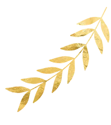
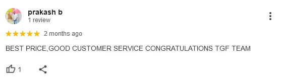
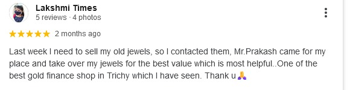
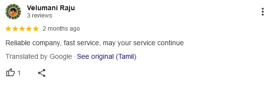
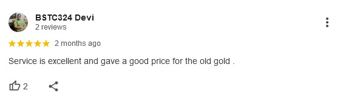

Highest Cash for Old Gold, Broken Jewellery & Pledged Gold in Trichy!
100% Transparent German Purity Testing • Live Market Rates • Spot Cash in 15 Minutes.
Serving Thillai Nagar, Cantonment, Srirangam & All Trichy Areas • Call +91 81100 99166

20+
Years Experience
Satisfied
Happy Customers
EXPERIENCE THE LEGACY OF TRICHY GOLD COMPANY
Sell Old Gold Jewellery In Trichy For Top Prices!
Best Rates For Old, Broken & Pledged Gold.
100% Purity Testing • Instant Cash In 15 Mins.
Compare With Any Gold Buyers In Trichy!
To sell your gold,
call us at +91 81100 99166
or via WhatsApp to arrange doorstep service in Trichy
Our expert team provides a comprehensive
estimate based on live market rates for your gold, silver,
and diamond jewelry
German non-destructive purity testing in front of you.
Encouraging clients to cross-check with other gold buyers
Visit our Thillai Nagar branch to sell your gold for the full
estimated total value offered by our team
Our friendly staff will visit your home across Trichy, conduct the
verification process, and make payments accordingly
Receive spot cash, IMPS, or UPI transfer in 15 minutes.
100% safe, verified, and customer-satisfied process




Trichy Gold Company (popularly known as Trichy Gold Finance) is Tiruchirappalli's premier
old gold buying company and pledged gold release specialist. With over 20 years of experience,
we provide customers across Trichy, Thillai Nagar, Cantonment, Srirangam, Woraiyur, Thennur, and KK Nagar
with the maximum live market value for old jewellery, broken gold ornaments, and gold coins.
பழைய தங்கம் வாங்கப்படும் | அடகு தங்கம் மீட்டு விற்க சிறந்த இடம்:
Our zero-deduction policy, certified German purity testing, and instant spot payment guarantee
the most transparent, rewarding, and trusted gold selling experience in Tiruchirappalli.
Best Old Gold Buyer in Trichy • Instant Cash • 100% Transparent • 20+ Years Legacy